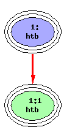

Paramount to creating a useful traffic control configuration is understanding how to manipulate the class hierarchy you can attach to each root hook. You configure all aspects of the actual shaping using the tc binary. (Traffic classification can be done with the tc binary as well, but we will instead look at a more powerful method later.)
Let us take an example, using the tc binary.
tc qdisc add dev eth2 parent root handle 1:0 pfifo |
Now, that is a lot to take in at once. I have added some verbosity you seldom see to further attempt to clarify what is happening here.
First, we specify that we want to work with a qdisc. Next, we indicate we wish to add a new qdisc to the Ethernet device eth2. (You can specify del in place of add to remove the qdisc in question.) Then, we specify the special parent root. We discussed the importance of the root hook earlier. It is the hook on the egress side of your Ethernet interface. The handle is the magic userspace way of naming a particular qdisc, but more on that later. Finally, we specify the qdisc we wish to add. Because pfifo is a classless qdisc, there is nothing more to do.
A graphical representation of the structure we just created is depicted below. The color blue is used to represent a qdisc. Later, you will see green used to represent a class.
It is important to discuss the naming convention for qdiscs before proceeding. qdiscs are always referred to using a combination of a major node number and a minor node number. For any given qdisc, the major node number has to be unique for the root hook for a given Ethernet interface. The minor number for any given qdisc will always be zero. By convention, the first qdisc created is named 1:0. You could, however, choose 7:0 instead. These numbers are actually in hexadecimal, so any values in within the range of 1 to ffff are also valid. For readability the digits 0 to 9 are generally used exclusively.
Now, let us look at an example where we add a classful qdisc and a single class.
tc qdisc add dev eth2 parent root handle 1:0 htb default 1 |
Initially, it looks almost identical to the previous classless qdisc. The htb qdisc was used here. However, to actually benefit from using this classful qdisc, we need to add some classes. You will notice above the parameter default is specified. It is an option for htb qdiscs described later.
tc class add dev eth2 parent 1:0 classid 1:1 htb rate 1mbit |
Now, we use the tc binary with the class argument, instead of the qdisc argument. The class argument allows you to create a class hierarchy. We are working with Ethernet device eth2 again. The parent parameter enables you to attach this class to either an existing classful qdisc or another class of the same type. Above we attach to the htb qdisc we just attached to the root hook earlier.
The value for the parent parameter must be the major and minor node number of the qdisc or class you wish to attach to. Earlier, the identifier 1:0 was chosen for handle of the htb qdisc. That must be used as the argument to the parent parameter so tc knows where you are assigning this class.
The classid parameter serves the same purpose for classes that the handle parameter serves for qdiscs. It is the identifier for this specific class. The major node number has already been chosen for you. It must be the same as the major node number specified for the parent argument earlier. You are free to choose any minor node number you want for the classid parameter. Traditionally numbering starts at 1, but numbers from 1 to ffff are valid. For this class the classid 1:1 was chosen, because the qdisc it is being attached to has a major node number 1 for its handle parameter.
Finally we specify the type of class and any options that class requires. In this instance, the htb class was chosen, as the htb qdisc can only have htb classes assigned to it. (This is generally true of classful qdiscs.) The rate option for htb is discussed later.
Another graphical representation, this time of an htb qdisc and an associated class in a simple hierarchy, is shown below. The qdisc is blue and the class green.

Finally, we can reveal a complete example using both classful and classless qdiscs.
tc qdisc add dev eth2 parent root handle 1:0 htb default 20 tc class add dev eth2 parent 1:0 classid 1:1 htb rate 1000kbit tc class add dev eth2 parent 1:1 classid 1:10 htb rate 500kbit tc class add dev eth2 parent 1:1 classid 1:20 htb rate 500kbit tc qdisc add dev eth2 parent 1:20 handle 2:0 sfq |
Now we have a nested structure, with a htb classful qdisc assigned to the root hook, three htb classes, and asfq qdisc as a leaf qdisc for one htb class. The other has an implicit pfifo attached. The careful reader will notice each qdisc has a minor node number of zero, as is required.
A graphical representation of the class hierarchy just created should be beneficial.
First, notice the at the top of the hierarchy is a htb qdisc. Three classes are assigned to it. Only the first is immediately attached to it, using the parent 1:0. The other two classes are children of the first class. If you examine the tc command with the class option, you will see that the parent refers to the parent class in the hierarchy via its classid.
Each of the three htb classes attached to the htb qdisc are assigned a major node number of 1 for the classid, as the qdisc they are attached to has a handle with 1 as the major node number. The minor node number for each classid must merely be a unique number between 1 and ffff in hexadecimal.
Finally, a sfq qdisc is attached to the leaf class with classid 1:20. Notice the qdisc is added nearly the same as the htb. However, instead of being assigned to the magic root hook, the target is 1:20. The handle is chosen based on the rules discussed earlier. Briefly, the major node number must be a unique number between 1 and ffff and the minor node must be 0.
Last, the whole structure can be deleted simply by deleting the root hook as demonstrated below.
tc qdisc del dev eth2 root |
Now we can take a look at the details of the hierarchy we have created. Using the tc tool again the following output is produced.
# tc -s -d qdisc show dev eth2 qdisc sfq 2: quantum 1514b limit 128p flows 128/1024 Sent 0 bytes 0 pkts (dropped 0, overlimits 0) qdisc htb 1: r2q 10 default 0 direct_packets_stat 0 ver 3.16 Sent 0 bytes 0 pkts (dropped 0, overlimits 0) |
Each qdisc in your hierarchy is shown along with statistics and the details of its parameters. The information available for each qdisc varies. The number of sent bytes and packets is self explanatory. For classful qdiscs, the totals are class wide and include the dequeue totals from children and siblings.
# tc -s -d class show dev eth2 class htb 1:10 root leaf 2: prio 0 quantum 13107 rate 1Mbit ceil 1Mbit burst 2909b/8 mpu 0b cburst 2909b/8 mpu 0b level 0 Sent 0 bytes 0 pkts (dropped 0, overlimits 0) lended: 0 borrowed: 0 giants: 0 tokens: 28791 ctokens: 2879 |
The detailed output for classes is similar to that of qdiscs. The information available varies depending on the type of class. The above is typical of a htb qdisc's class.
Next, we will discuss some of the more interesting qdiscs available, including pfifo, sfq, tbf, prio, htb.